Congratulations !
You created your first working copy module ! You can now start to learn how to handle with templates
This chapter covers how to create and handle Templates.
Templates are datas that may contain :
Templates can be created at two levels :
Modules and technos (described below) contain templates and are associated with a version. Hesperides use another concept for modules and technos : the type. A type can be either "working copy" or "release". It can be compared with "snapshot" and "release" from Maven.
This type allows you to continue editing the module/techno.
You can verify that you are currently editing a working copy with this element :
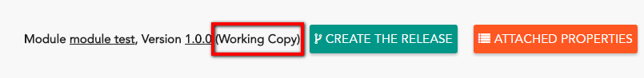
When you are satisfied with datas inside templates, you can release the version of your module/techno.
Type "release" identifies a module/techno that can not be changed.
You can create the release by :
Module is the first and mandatory level to handle with templates.
In this section, you will learn how to manage modules, and how to manage templates inside modules.
Before managing templates, you have to create a module. To do that, get in "By module" menu and clic on "Create a working copy" :
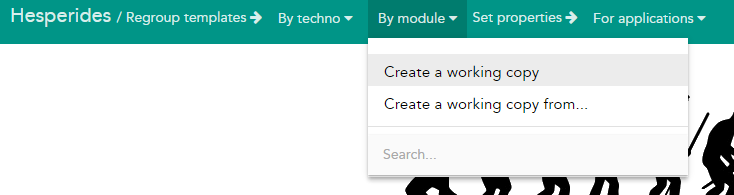
You can now just fulfill the module name (1), the version (2) and click on "create" button (3) : 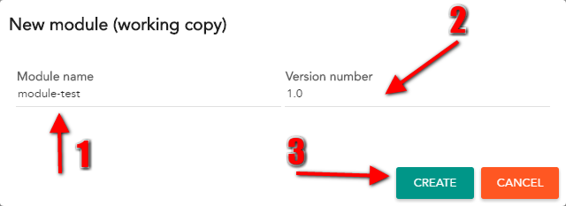
You created your first working copy module ! You can now start to learn how to handle with templates
Instead of creating a module from scratch, you can create a module from an existing one. To do that, get in "By module" menu and clic on "Create a working copy from..." :
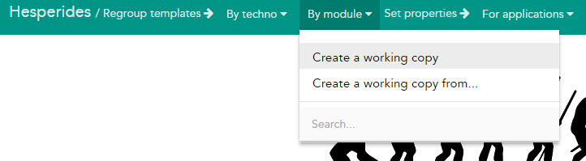
You can now just fulfill the module name (1), the version (2) and use the autocomplete field to find which module you want to copy (3) - then hit the "create" button (4): 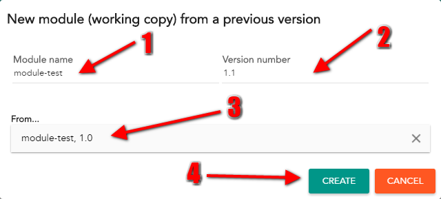
After creating modules, you can edit them using the autocomplete input "Search" :
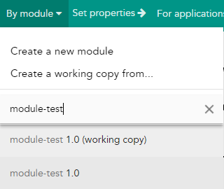
Use the power of autocomplete
Techno is a kind of module that contains templates, but that can be inherited in a module.
To create a techno, get in "By techno" menu and clic on "Create a working copy" :
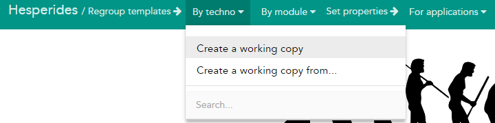
You can now just fulfill the techno name (1), the version (2) and click on "create" button (3) : 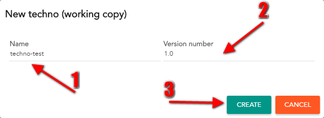
You created your first working copy techno ! You can now start to learn how to handle with templates
Instead of creating a techno from scratch, you can create a techno from an existing one. To do that, get in "By techno" menu and clic on "Create a working copy from..." :
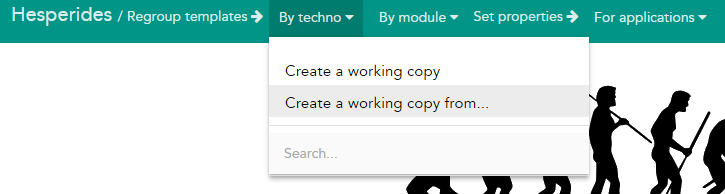
You can now just fulfill the techno name (1), the version (2) and use autocomplete field to find which techno you want to copy (3) - then hit the "create" button (4): 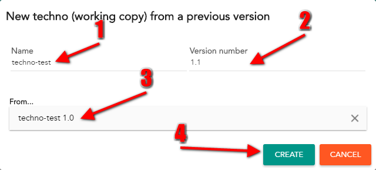
After creating technos, you can edit them using the autocomplete input "Search" :
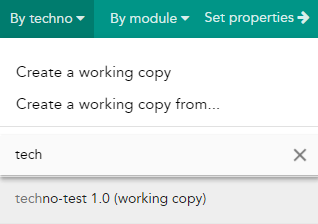
Use the power of autocomplete
As explained quickly earlier, templates are some kind of files created inside a module or a techno, that contain plain text or templated values using mustache.
Each time a templated value can be used, you have acces to a set of predefined valuation. Pay attention to them to prevent duplicate.
In either modules or technos, you can add template by clicking the "Add a template" button:
When you click on "Add template" button, you have to fill in several informations :
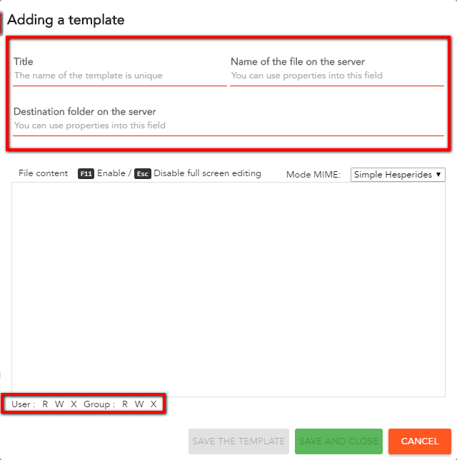
All you have to do is to define the content of your template and it can be anything you want : key-value, json, plain text, xml etc ....
Inside the content, you can put some hard coded datas, or use mustache framework.
key1=hard_coded_value
key2={{templated_value}}<logger name="com.mkyong.web" level="{{level}}"
additivity="{{additivity}">
<appender-ref ref="STDOUT" />
</logger> key = {{ key1 }} is the equal to key = {{key1}}They can also be dotted like this
username = {{ mysql.user.name }}
We add some specifics annotations
key1=hard_coded_value
required_key={{value1|@required}}
key_with_comment={{value2|@comment "some comment to explain the key"}}
key_with_default_value={{value3|@default "false"}}
key_password={{value4|@password}}
key_with_pattern={{value5|@pattern "[a-z]*"}}
Now that you're comfortable with "simple properties", you can handle with iterables properties. With this new concept, you can iterate on blocks to avoid repeating templated values.
Let's approve that with an example : we want to generate an html list of shoes with the brand and bar code
To define iterable block, use {{#FOO}} to start block and {{/FOO}} to end it :
<html>
<body>
<ul>
{{#ITERATE_ON_SHOES}}
<li>{{brand}} has bar code : {{barcode}} </li>
{{/ITERATE_ON_SHOES}}
</ul>
</body>
</html>
Go to valuation section to see how to fulfill values for iterable properties.
Iterable block concept is directly defined by mustache framework